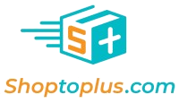
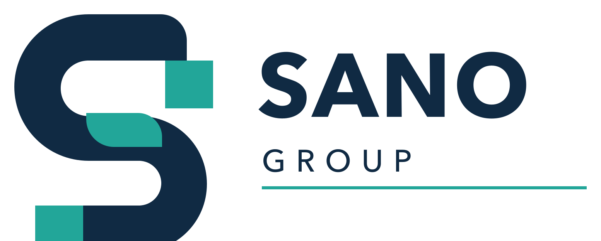
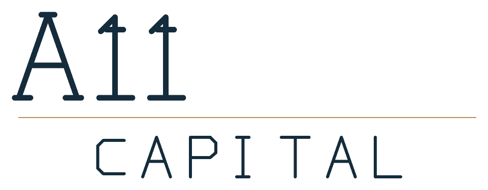

STAYS CLOSE TO HOME
What stays local
- The brand and customer relationships
- Local service and community presence
- Product and care expertise
- Day-to-day decisions with the local team
✳
We partner with trusted pet businesses to help them grow, adopt useful AI and technology, and access thoughtful financial support—while keeping what makes them special.
Local trust. Shared strength.
Independent brands, backed by a connected platform.
The best businesses grow stronger when their people, identity, and customer relationships are respected.
SCROLL TO EXPLORE ↓Across the pet industry, excellent local businesses earn deep customer trust. Yet many face the same challenges: succession, rising operating demands, changing customer expectations, and limited time to invest in new tools.
Pet Alliance brings businesses together to share operating expertise, adopt AI and technology in practical ways, and access financial support and capital leverage where appropriate—opening new paths to growth without losing the local expertise and care customers already value.
What that looks like ↘Relationships, know-how, and a team’s commitment are the foundation of every lasting pet business.
A familiar name and community connection can be a real competitive strength. We aim to preserve both.
Shared systems, AI adoption, purchasing power, and financial resources can give local teams more room to focus on customers and growth.
Keep the heart of the business.
Strengthen everything around it.
Each partnership is shaped around the business. Our role is to add practical support where it helps—and leave local teams close to their customers.
Practical transformation, backed by sound capital planning. We help teams identify useful AI applications, select appropriate tools, redesign workflows, and build adoption skills, with human oversight and responsible data practices. We also assess financial needs and financing options, including capital leverage where suitable, to support sustainable growth. Any use of customer information should be permission-aware, secure, and tied to a clear customer benefit.
Whether you are thinking about succession, seeking a partner for growth, or simply curious about what comes next, we welcome a confidential first conversation.
Talk with our team ↗We learn about your business, your goals, and what matters most to you.
We explore practical AI adoption, operating improvements, financial support, and capital leverage—alongside what you want to preserve.
If there is a fit, we outline diligence, possible transaction and financing terms, and a thoughtful transition.
After a partnership, we set priorities with your team across AI adoption, operations, and financial planning, then track progress openly.
We look for lasting value and the people behind it. Every opportunity is assessed on its own merits.
Established pet businesses with a trusted reputation
Repeat customers and evidence of durable demand
Clear, verifiable financial and operating records
Owners interested in a thoughtful next chapter
A strong local team and potential for continued leadership
Opportunity to benefit from AI adoption, operating support, and appropriate capital
We consider specialty retail, e-commerce, pet services, and selected adjacent categories. Geography and segment priorities will depend on strategic fit and our ability to support the business well.



Pet Alliance is being built by a team with experience across pet commerce, supply-chain operations, and finance. We bring these perspectives together to help businesses adopt useful AI, strengthen day-to-day operations, and evaluate financial support and capital leverage for their next stage of growth.
We believe credibility is earned through clear commitments, sound decisions, and the results our partners can see.
Commerce experience and a focus on the needs of pet owners.
Supply-chain and workflow experience aimed at dependable execution.
Financial discipline, growth capital, thoughtful capital leverage, and transparent governance.
Our starting point is to preserve the brand and local identity that customers value. Any changes would be discussed with the business and supported by a clear reason.
No. We are glad to have an early, confidential conversation with owners exploring succession, growth, or future options.
We are interested in established pet businesses with trusted customer relationships, sound records, and a strong local team. We assess each opportunity individually.
People and operating knowledge are central to a business’s value. We plan transitions with the owner and leadership team, and communicate clearly about any proposed changes.
We support practical AI transformation—from identifying use cases and choosing tools to redesigning workflows and helping teams adopt them—with human oversight. Customer information should be handled with appropriate permission, security, and safeguards—not pooled by default.
Tell us a little about your business and what you are considering. We will treat the conversation with care.
Founder-to-founder.
Confidential. No commitment.